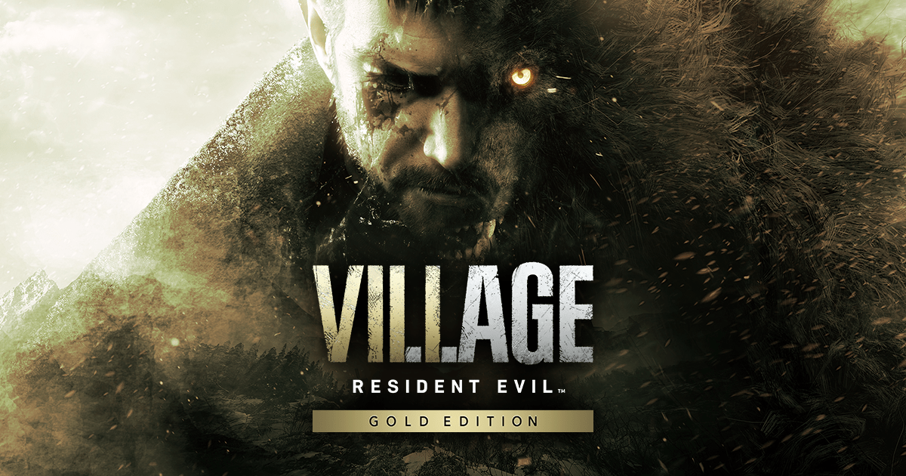

Resident Evil: O Horror Começa com a Verdade
Desde 1996, Resident Evil (ou Biohazard no Japão), criado pela Capcom, tem sido referência quando se fala em survival horror. A franquia mistura zumbis, armas biológicas, conspirações corporativas e cenários aterrorizantes em histórias cheias de tensão e reviravoltas. Com dezenas de jogos, filmes, livros e séries, Resident Evil construiu um universo sombrio que evolui a cada nova ameaça.
Resident Evil (1996) – PS1 / Remake (2002, atualizado em 2015)

O jogo que iniciou tudo. A Equipe S.T.A.R.S. investiga estranhos assassinatos nas Montanhas Arklay e acaba presa na icônica Mansão Spencer, infestada por zumbis e experimentos da Umbrella Corporation. Jogamos com Chris Redfield ou Jill Valentine.
Destaque: Atmosfera claustrofóbica, quebra-cabeças, gestão de recursos e o terror psicológico que marcou uma geração.
Resident Evil 2 (1998) / Remake (2019)

Dois meses após o primeiro jogo, Leon S. Kennedy, um policial novato, e Claire Redfield, irmã de Chris, enfrentam o surto do T-Virus em Raccoon City. O remake modernizou totalmente o visual e a jogabilidade, mantendo o clima de terror.
Destaque: Introdução de Ada Wong e Mr. X, além do cenário urbano apocalíptico.
Resident Evil 3: Nemesis (1999) / Remake (2020)
Acompanhamos Jill Valentine tentando escapar de Raccoon City enquanto é perseguida pelo implacável Nemesis, uma arma biológica criada para eliminar os membros da S.T.A.R.S.
Destaque: A constante perseguição de Nemesis e a tensão ininterrupta.
Resident Evil Code: Veronica (2000)
Claire busca seu irmão Chris em uma ilha remota controlada pela Umbrella, enquanto um novo vilão surge: Alfred Ashford. O jogo expande a mitologia da Umbrella e dos experimentos genéticos.
Destaque: História mais complexa e a estreia de um enredo mais global.
Resident Evil 4 (2005) / Remake (2023)

Um dos títulos mais influentes da história dos games. Leon Kennedy é enviado à Europa para resgatar a filha do presidente dos EUA, enfrentando cultistas infectados pelo parasita Las Plagas. O remake de 2023 refina gráficos, gameplay e narrativa.
Destaque: Revolucionou o gênero com câmera por cima do ombro e ação intensa sem perder o horror.
Resident Evil 5 (2009)

Chris Redfield vai à África investigar um novo vírus. Acompanhado de Sheva Alomar, ele descobre uma conspiração envolvendo velhos inimigos. É um dos jogos mais voltados à ação.
estaque: Co-op e revelações importantes sobre o passado de Chris e a Umbrella.
Resident Evil 6 (2012)

Quatro campanhas interligadas, com personagens como Leon, Chris, Ada e Jake Muller, filho de Wesker. Enfrentam uma nova ameaça global: o C-Virus.
Destaque: Enredo ambicioso e mais foco em ação cinematográfica.
Resident Evil 7: Biohazard (2017)
Um retorno ao horror puro. Em primeira pessoa, controlamos Ethan Winters, que busca sua esposa desaparecida e encontra os Baker, uma família corrompida por um novo organismo. O jogo marca uma nova fase da franquia, mais intimista e assustadora.
Destaque: Atmosfera tensa, terror psicológico e uso imersivo da câmera em primeira pessoa.
Resident Evil Village (2021)
Continuação direta do 7. Ethan busca sua filha sequestrada em uma vila dominada por criaturas monstruosas e liderada por vilões icônicos, como Lady Dimitrescu. O jogo mistura horror gótico com ação.
Destaque: Variedade de inimigos, ambientações marcantes e revelações impactantes sobre o universo da franquia.
Em um mundo onde o verdadeiro inimigo não são os mortos, mas os que brincam de deus, sobreviver é apenas o começo da luta por humanidade.